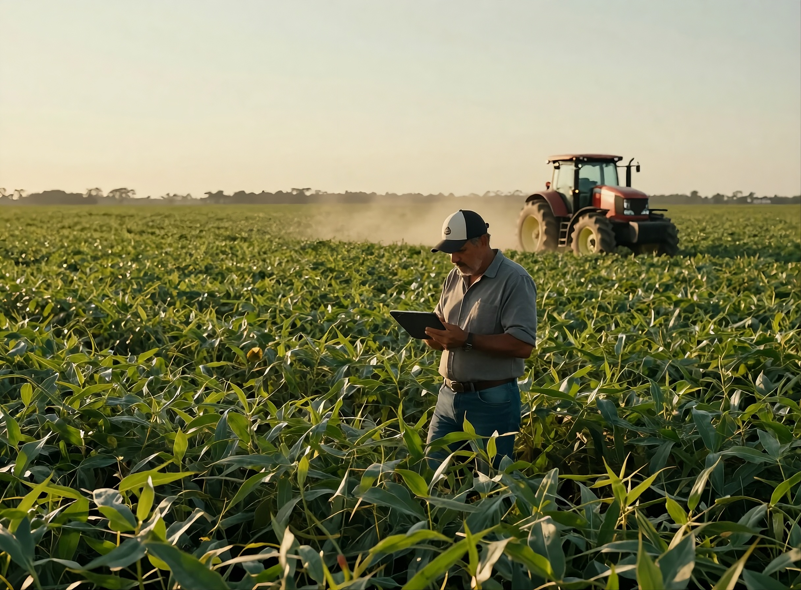

Contabilidade estratégica para o agronegócio e empresas em Mato Grosso
Solidez técnica e proximidade com a sua realidade. Do produtor rural à empresa em expansão, traduzimos a complexidade fiscal em decisões seguras.

Diferencial GWF
Entendemos a rotina fiscal de quem vive do campo
Contabilidade para o produtor rural não cabe em modelo genérico. A GWF conhece a realidade do agronegócio mato-grossense e conduz cada obrigação com precisão técnica e linguagem clara.
-
Sazonalidade fiscal
Planejamento que acompanha o ciclo da safra do plantio à comercialização com fluxo de caixa e apuração no tempo certo.
-
Operações agrícolas
Domínio de LCDPR, Funrural, notas de produtor e movimentações específicas da atividade rural.
-
Compliance do setor
Segurança nas obrigações acessórias e no relacionamento com órgãos estaduais e federais de MT.
-
Sucessão e patrimônio
Estruturação da atividade rural com visão de longo prazo, proteção patrimonial e planejamento sucessório.
Soluções contábeis completas, sob medida para o seu negócio
Cada frente é conduzida por especialistas. Você fala com quem entende do assunto.
Fiscal
Apuração de tributos, planejamento tributário e gestão das obrigações acessórias com foco em economia legal.
Contábil
Escrituração completa, demonstrações e relatórios gerenciais que apoiam decisões com clareza.
Trabalhista
Folha de pagamento, admissões, rescisões e eSocial conduzidos com segurança e prazo.
Produtor Rural
LCDPR, Funrural, notas de produtor e toda a rotina fiscal da atividade agrícola em MT.
Legalização de Empresas
Abertura, alterações e regularização societária, do registro às licenças de funcionamento.
Entrar em contato
Conte a sua necessidade e desenhamos o serviço certo para a sua operação.
Falar com a GWFSobre a GWF
Um escritório que respeita o tempo do empresário
A GWF Consultoria e Contabilidade nasceu em Rondonópolis com um propósito claro: unir a solidez técnica das grandes estruturas à proximidade de quem conhece de perto a realidade do produtor rural e do empresário mato-grossense.
Atuamos de forma consultiva. Antecipando cenários, orientando decisões e transformando a rotina fiscal em vantagem competitiva.
- Rigor técnico em cada obrigação
- Proximidade real com o cliente
- Atendimento personalizado
- Compromisso com o prazo

-
+12
anos de experiência -
+300
clientes atendidos -
5
áreas de especialidade -
100%
atendimento consultivo
Contato
Vamos conversar sobre o seu negócio
Nossos portais
Acesso rápido aos nossos portais